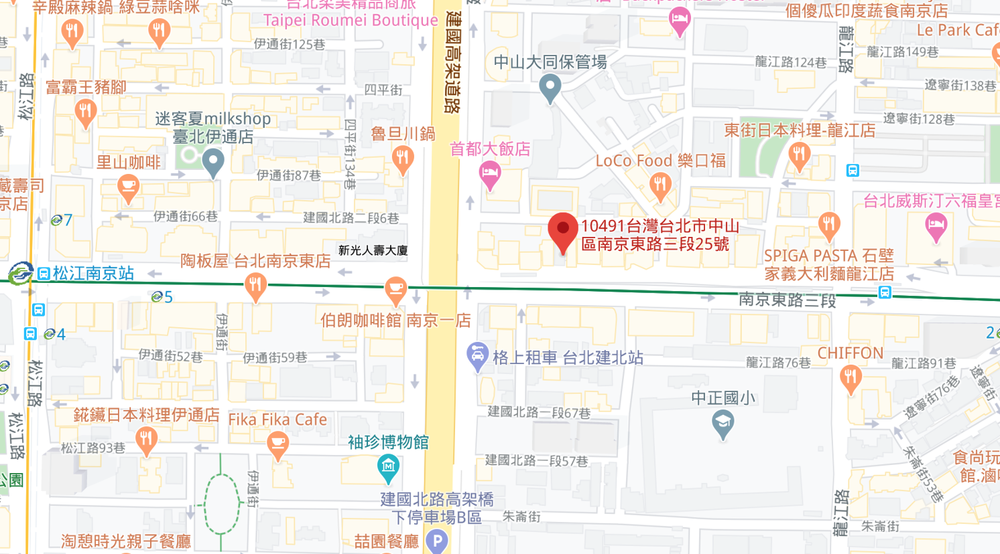

<div class="location container">
    <h1 class="fz-12 bold">門市據點</h1>
    <div class="region-select mb-10">
        <h2 class="fz-6">選擇地區</h2>
        <select name="" id="">
            <option value="Taipei">台北市</option>
            <option value="Taichung">台中市</option>
            <option value="Kaohsiung">高雄市</option>
        </select>
    </div>
    <div class="chain">
        <div class="chain-info">
            
            <div class="chain-name">
                <h2 class="fz-6">台北中山旗艦店</h2>
                <div class="chain-contact">
                    <p class="fz-5 mb-2"><span class="material-symbols-outlined">
                        call
                        </span>電話：(02)000-1234</p>
                    <p class="fz-5 mb-2"><span class="material-symbols-outlined">
                        schedule
                        </span>營業時間：10:00-21:00</p>
                    <p class="fz-5 mb-2"><span class="material-symbols-outlined">
                        location_on
                        </span>地址：台北市中山區南京東路25巷2-1號</p>
                </div>
                
            </div>
        </div>
        <div class="chain-map">
            
        </div>
    </div>
</div>